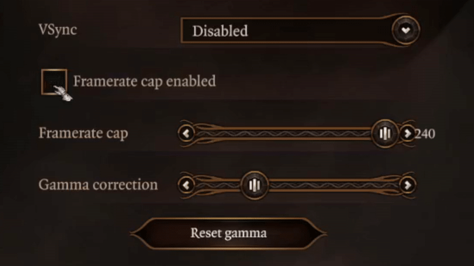
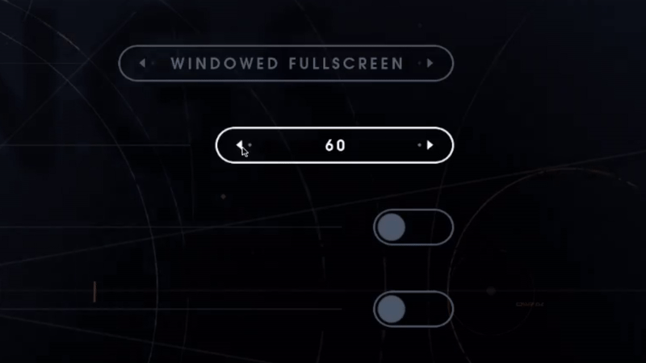

FPS, Refresh Rates, and You
Battle of the Syncs: VSync, FreeSync, G-Sync, Enhanced Sync, Fast Sync—a saga of coil whine, loud fans, screen tearing, input lag, and humanity's rebellion against these dastardly fiends.
Created on August 30, 2021.
Recently, I upgraded my PC's hardware, and installed a clean-slate OS. Out of curiosity, I ran a prototype of a game I'm working on. I noticed that the frame rate quadrupled in lieu of the upgrade—nice.
But, what was that horrendous sound?
Coil Whine & Loud Fans
Oh, that was just the sound of my GPU screaming. Yes, the higher-frequency processing instigated coil whine. What is coil whine? Michael Crider succinctly explains it via How-To Geek:
On a pure technical level, coil whine refers to an undesirable noise emitted by an electronic component vibrating as power runs through an electrical cable. Just about anything with a power source can create coil whine to some degree, but it’s usually caused by an electrical current going through a power-regulating component like a transformer or inductor, causing its electrical wiring to vibrate at a variable frequency.
Coil whine is, in fact, normal; it's just that we don't normally hear it.
Relatedly, Crider goes on to say:
But when you’re dealing with high-powered components in modern gaming PCs, especially the graphics card and power supply, these vibrations can be audible. This is especially true for anyone who’s sensitive to high-frequency noises. In bad cases, you can actually hear the pitch of the coil whine change as the GPU draws more or less power, and the electrical frequency across various components shifts [my emphasis].
After perusing various forums, I came to realize that this is a common problem, and the culprit is in allowing the GPU to process frames as quickly as it pleases. Some people have also reported their GPU fans spinning up at a perfectly annoying harmonic resonance that replaces the wonderment of life with frenetic melancholy. These problems may be remedied at one of three levels:
- Hardware level
- Driver level
- Game level
I'll touch upon hardware later. As for drivers, controlling FPS with them is expected, and provides for a more consistent, holistic gaming experience than having users painstakingly update configuration on a per-game basis. Still, it would seem ideal for games to individually offer configurable settings for limiting the frame rate.

Manipulating the frame rate cap slider of Baldur's Gate 3.
Baldur's Gate 3 takes an interesting approach to this problem, offering an integer slider. On a 60Hz monitor, the slider ranges from 10 to 240 frames per second, inclusive. Ideally, the upper limit should vary based on the detected refresh rate, for reasons that will become clear in time. Where does 240 come from, anyway?
It has to do with screen tearing.
Screen Tearing
Screen tearing occurs when the frame rate of a video feed, controlled by software in this case, loses synchronization with the display device's refresh rate. If the FPS is a multiple of the refresh rate, then screen tearing is prevented. The automated and familiar way of achieving this is through vertical synchronization, or VSync, but I'll discuss it later. For the time being, note that 240 is a multiple of 60, which may explain Baldur's Gate 3's slider (assuming 240 is not hard-corded). Keep in mind, however, that each frame over 60FPS is effectively dropped by a display device operating at a 60Hz refresh rate. Of course, updates in the game may occur regardless of what said device is capable of.

"A typical video tearing artifact (simulated image)" by Vanessaezekowitz via Wikipedia (CC BY-SA 3.0).
What does it mean to refresh, anyway? Well, the images produced on your screen are the result of periodic electrical impulses along a grid of tiny lights. Think of each row in the grid as a line. Under normal circumstances, the cumulative light of these lines appears to have "constant" emission, but that is an illusory product of rapid impulses.
Just how rapid are those impulses?
Today, monitors commonly offer refresh rates of 30, 60, 75, 120, 144 and 240 hertz (Hz). This unit is defined as one cycle per second. In the case of a computer monitor, this is one refresh per second. The ideal refresh rate with respect to human vision, even in 2021, is still up for debate. What may complicate matters more is that many of us may have inadvertently trained our vision processing systems, over the course of our modern lives, on 29.97FPS. What implication this has on reaction time, which is relevant to, say, a first-person shooter: I don't know.
Regardless, we're limited by our hardware. Its limitations, however, seem to know no limit. There is a small, albeit growing, proportion of gamers who own 360Hz displays. What's more, there are 480Hz ones on the way. What conclusion is there to draw from our fetishism of refresh rates, at least for the time being? Game developers ought to maintain flexibility with regard to them; however, that is in spite of ongoing advances.
Vertical Synchronization
Before we get ahead of ourselves, let's discuss VSync. The vast majority of graphically-intensive games use or offer it. What does it do? It attempts to make FPS conform to detected refresh rates. How? Via framebuffers, which are memory buffers containing all the pixels of a frame. All video cards, even ancient ones, have a RAM-based framebuffer. Modern cards have enough framebuffer memory to support page flipping.
One type of page flipping is called double buffering. For it to work, the framebuffer must have enough memory to store at least two frames. Even if these two frames are stored in contiguous memory, we'll simply call them two separate buffers since they are treated as such. One buffer is primary, the other secondary. While the primary (front) buffer is read by the monitor, the secondary (back) buffer is written to. After the vertical blanking interval, as in the time it takes for the aforementioned lines of lights to refresh, these buffers are swapped, or flipped—primary becomes secondary, and vice versa.
When buffer swaps are synchronized with the refresh rate of a monitor, that is vertical synchronization (VSync) in a nutshell.
Being restricted to a single buffer obviously has drawbacks insofar as flickering and screen tearing are concerned. While double buffering with VSync activated may solve those problems, it also creates new ones because of the inherent delay in the vertical blanking interval. This causes:
- Input lag resulting from the delay between in-game causes and their visual effects
- Artifacts from playback of low-FPS video known as judder
- Possibly misleading results when benchmarking (generally not a huge deal)
Triple buffering is an alternative technique. Yep, my mom lets me buffer three frames instead of two. That involves, obviously, three buffers. Derek Wilson offers his take on triple buffering via AnandTech:
This additional buffer [over two] gives the computer enough space to keep a buffer locked while it is being sent to the monitor (to avoid tearing) while also not preventing the software from drawing as fast as it possibly can (even with one locked buffer there are still two that the software can bounce back and forth between). The software draws back and forth between the two back buffers and (at best) once every refresh the front buffer is swapped for the back buffer containing the most recently completed fully rendered frame.
Delays, begone! Well, kind of. With triple buffering and VSync, the user can see a fresher image on the screen than with double buffering and VSync. This translates to a more "current" visual representation of a game's state at any given moment. In theory, the player should be more able to appropriately react with triple buffering as opposed to double buffering; however, this is often not the case! Triple buffering with VSync reduces "visualization lag," while potentially increasing(!) input lag over double buffering with VSync. Uh oh. What's the point in seeing a fresher state of a game if you can't act upon it? It's like having no mouth, yet needing to scream (this constitutes another way to describe coil whine).
All right, so triple buffering may increase input lag, and it requires more memory. Hmm. The three buffers, treated as a sequential queue, are no doubt fancy, but not necessarily a great solution for competitive games such as CS: GO, assuming some players have world-class cognitive and physical reaction times. If there weren't people with such reaction times, I don't think they would be getting paid millions of dollars to play video games—which they are.
If you loathe the drawbacks of double and triple buffering with VSync, read on. There's good news.
Variable Refresh Rate
We've been focused on making FPS conform to the refresh rate, but, what if I told you that there was a way to, inversely, make the refresh rate conform to the FPS? That's a variable refresh rate, or adaptive synchronization. There are two competing technologies for achieving this: AMD's FreeSync, and Nvidia's G-Sync. They do, essentially, the same thing.
It's worth mentioning there are two different kinds of G-Sync. There's the OG (original gangster) G-Sync, and G-Sync Compatible. Plain-old G-Sync requires a proprietary module to have been installed in a display device, along with a compatible video card and driver software. G-Sync Compatible, then, is Nvidia's way of supporting AMD's FreeSync, as FreeSync requires no added module in the display device. FreeSync is, after all, based upon the Adaptive-Sync protocol created by VESA, as explained by Scharon Harding via Tom's Hardware.
Scharon further elucidates other differences, such as the fact that FreeSync supports both HDMI and DisplayPort, whereas vanilla G-Sync only supports DisplayPort. She continues by saying:
FreeSync is built on an open standard, and display makers don’t have to pay AMD a licensing fee or for hardware modules to incorporate it. Contrastingly, to use G-Sync, monitor makers have to pay for Nvidia's proprietary chip, which replaces the scaler they'd typically buy. As a result, FreeSync monitors are usually cheaper than G-Sync ones. However, Nvidia is fighting back with G-Sync Compatible monitors, which it certified to run G-Sync despite lacking the hardware as a standard G-Sync display. Many G-Sync Compatible displays are also FreeSync-certified, and we’ve found that numerous FreeSync monitors can also run G-Sync Compatibility even though they’re not certified to do so.
In essence, monitors are rated for their FreeSync-readiness based on their capabilities, chiefly refresh rates, whereas a monitor is either strictly conformant to G-Sync, or not, depending on the presence of said chip.
I will not delve into the minefield that is speculating about the performance differences between FreeSync and G-Sync, because, again, these technologies' end goals are the same. Full disclosure: I've used both AMD and Nvidia products, and I have no allegiance to either one of them in particular. They're far more similar than they differ: these are entities prioritizing profit over all else.
Traditional VSync's Successor
You should know that AMD offers Enhanced Sync with certain cards, whereas Nvidia offers Fast Sync. These involve three buffers, as in triple buffering, except, rather than abstracting the buffers as a sequential queue, the oldest buffer is overwritten. This technique does not replace, but, instead, complements adaptive synchronization. Enhanced/Fast Sync can also be used without adaptive synchronization.
They should both drastically reduce input lag over traditional VSync techniques, as demonstrated in this video by Battle(Non)Sense.
Conclusions for Gamers
FreeSync, G-Sync and G-Sync Compatible are your friends, assuming you have access to hardware that supports them, or if you can afford conformant hardware. With that, you can likely enjoy configuring most your software at the driver level, as opposed to a per-game basis. Lucky you.
And whether or not you have a fancy monitor, if your GPU is modern and powerful, then Enhanced/Fast Sync are worth using if available. More specifically, if your GPU can process frames faster than the refresh rate, these are worth toggling on, but that depends on how demanding a given game is.
Otherwise, you're left with traditional VSync if you want to prevent screen tearing. If you don't care, by all means, turn it off. Competitive gamers with older hardware, unfortunately, cannot be too picky about screen tearing. Other games, such as turn-based ones and city builders, may not require quick-fire reaction times, which opens the door to VSync even if it introduces some input lag.
As for coil whine and annoying fan speeds, ultimately you want a hard limit on FPS no matter your hardware. Modern driver software has such limits, or target FPS. I recommend looking into this if you're experiencing noise issues. Good luck!
Conclusions for Game Developers
I'm probably preaching to the choir, but, if you're a game dev, you cannot assume that your players:
- Have hardware that supports adaptive synchronization
- Have access to Enhanced/Fast Sync
- Have some kind of system- or driver-enforced FPS cap or target
Friendly reminder: you can't even assume that your players have any active peripherals at any given time. Oh, the joys of game development. Anyway, to prevent coil whine and fans from sounding as loud as wind turbines, you should probably integrate an FPS slider as in Baldur's Gate 3 or STAR WARS Jedi: Fallen Order.

Manipulating the frame rate cap slider of STAR WARS Jedi: Fallen Order.
The upper limit ought to be a multiple (like x4) of the detected refresh rate (and remember, you have to account for all connected monitors that can be used to display your game!). You'll notice that Respawn, while having made Fallen Order into a great game, appear to have just hard-coded popular refresh rates for it... Don't do that. By the way, the default value of the slider should be the detected refresh rate. If you can't detect it, well, have fun figuring that out.
In Unity, there is a
targetFrameRate.
As discussed, setting it to the value from said slider can solve some problems.
There are likely equivalents in other engines. Notice, however, according to the
documentation, that the targetFrameRate is invalidated by VSync when it is
active. As you know, you'll want to offer double and triple buffering with
VSync, in addition to other video-related settings, just in case.
Thanks for reading!